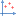
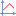

| DefaultDir |
Default directory |
`usr´ for user dir (home), `exe´ for exe dir, or an explicit path |
| TempDir |
Temporary files directory |
`sys´ to set system temp dir %TEMP%\~MattPlot\,
`exe´ for exe dir .\~MattPlot\, or an explicit path;
requires program restart
|
| PromptOverwrite |
Ask when writing on an existing file |
Choose between `true´ or `false´ |
| DeleteTemp |
Delete temp files on enter and exit |
Choose between `true´ or `false´ |
| PlaySound |
Enable/disable sound effects |
Not always available, "noisy" releases only |
| FloatPrecision |
Precision of displayed numbers |
An idea on precision of numbers, when no
other criterion can be applied
|
| FloatDigits |
Digits of displayed numbers |
Actually used for minimum digit of exponential part |
| Macro |
A predefined macro |
See also ExecMacro |
| DevelopMode |
Enable work-in-progress features |
Like logarithmic scales... |
| FormColor |
Background color of main form |
|
| ToolsColor |
Background color of tools |
Like Plot tree or Pane grid
|
| EnableMainMenu |
Application main menu visible or not |
Choose between `true´ or `false´ |
| EnableToolbar |
Application toolbar visible or not |
Choose between `true´ or `false´ |
| Toolbar |
Toobar buttons |
A comma delimited sequence of strings: get action names
from actions table or
from hints in the statusbar; use SEP or DIV
to put separators
|
| ObjectMenu |
General object contextual menu |
Put comma separated action
names, use `SEP´ or `DIV´ to create button groups
|
| FrameMenu |
Frame contextual menu |
Put comma separated action
names, use `SEP´ or `DIV´ to create button groups
|
| TrackMenu |
Track contextual menu |
Put comma separated action
names, use `SEP´ or `DIV´ to create button groups
|
| LogSite |
Initial position of Log |
Docked `Bottom´,`Right´ or `Floating´;
you can then drag and dock it
|
| PaneSite |
Initial position of pane grid |
Docked `Bottom´,`Right´ or `Floating´;
you can then drag and dock it
|
| DecimalSeparator |
Decimal separator char in float strings |
Type `?´ for locale settings |
| ThousandSeparator |
Thousand separator char in float strings |
Type `?´ for locale settings, or an improbable char
to throw errors even if local thousand separator
is encountered
|
| ExpectedDelimiters |
Expected data delimiter characters (other than space chars) |
Used to detect invalid numbers |
| ExcludePattern |
A file mask that identifies ignored files |
Used when analyzing files contained in a directory |
| DataDelimiter |
Columns delimiter when exporting to text |
A character |
| PrintInfoText |
Print also an info string in page header |
The string should include program name and current date-time |
| PrintMargin |
Print page margin |
An integer percentage (%) of page size |
| MetafileMagnification |
Metafile canvas dimension magnification
respect screen canvas
|
Augment this integer value to enhance metafile
resolution, but beware: this increases its
size and processing time
|
| SnapshotAction |
![[Snapshot]](./files/images/actions/Snapshot.gif) Snapshot action effects
|
Choose between `1´=save as gif, `2´=copy emf to clipboard, `3´=both |
| FirstMode |
Initial plot mode |
Choose between `SelectMode´, `EditMode´,
`PanMode´, `ZoomMode´, `MeasureMode´ or `PenMode´
|
| SampPerPix |
Maximum rendered samples per screen pixel |
Decrease it to enhance plot performance;
may decrease data sampling frequency,
so pay attention to aliasing
|
| Timeout |
Plot draw operation timeout [s] |
If draw takes too much time, abort |
| LagThreshold |
Plot Canvas repainting time slowness threshold |
When exceeded countermeasures can be taken,
like tracks undersampling
|
| PlotMargin |
Margin between frames |
A value in pixels |
| PlotFont |
Font for title, legend, etc |
String format is: family,size,color(hex),style
example: Verdana,12,0x0,b |
| MarkCurrentFrame |
Make current frame recognizable in plot area |
Choose between `true´ or `false´ |
| PlotAlsoOnMargins |
Extend plot area to frame lateral margins |
Choose between `true´ or `false´ |
| CenterTitle |
Center frame title |
Choose between `true´ or `false´ |
| TitleMag |
Frame title font magnification |
A percentage |
| FrameBorder |
Border width of frames |
A value in pixels |
| FrameMarginX |
Frames internal horizontal margin |
A value in pixels |
| FrameMarginY |
Frames internal vertical margin |
A value in pixels |
| FrameColor |
Default background color of new frames |
Use an integer number or a RGB set: `16397483´, `0xFA34AB´, `(171,52,250)´
To have a transparent background put the
same color of PlotFont |
| AxesColor |
Color of axes |
Use an integer number or a RGB set: `16397483´, `0xFA34AB´, `(171,52,250)´ |
| CenterAxesLabels |
Center x y labels |
Choose between `true´ or `false´ |
| LegendSpacing |
Lines and border spacing |
A value in pixels |
| LegendStrokeLength |
Length of track stroke |
A value in pixels |
| LegendColor |
Legend background |
Use an integer number or a RGB set: `16397483´, `0xFA34AB´, `(171,52,250)´
To have a transparent background put the
same color of PlotFont |
| VGridDist |
Desired vertical grid lines distance |
A value in pixels |
| HGridDist |
Desired horizontal grid lines distance |
A value in pixels |
| VGridDivs |
Vertical grid divisions (increasing order) |
A sequence of numbers |
| HGridDivs |
Horizontal grid divisions (increasing order) |
A sequence of numbers |
| GridLinesStyle |
Style of grid lines |
A string between `___´, `_ _´, `...´, `_._´, `_..´ |
| GridColor |
Color of grid lines |
Use an integer number or a RGB set: `16397483´, `0xFA34AB´, `(171,52,250)´ |
| LabelFont |
Font of grid labels |
String format is: family,size,color(hex),style
example: Small Fonts,6,0x0 |
| TrackLineWeight |
Track lines default width [pix] |
Generally a value grater than one
causes performance worsening and
force solid style
|
| TrackLineColorSeed |
Line color of first track |
Used by automatic track color generator;
following colors depend on this value
|
| TrackLineStyle |
Style of tracks lines |
A string between `___´, `_ _´, `...´, `_._´, `_..´ |
| TrackPointStyle |
Shape of tracks point marks |
A char between `x´, `o´, `+´, `q´ |
| TrackPointSize |
Size of tracks point marks |
Point marks half size [pix] is given by:
TrackPointSize ·TrackLineWeight +2 |
| TrackMarkPoints |
Mark each track point |
Choose between `true´ or `false´; see also  MarkPoints |
| TrackShowCoords |
Show point coordinates |
Choose between `true´ or `false´; see also ![[ShowCoords]](./files/images/actions/ShowCoords.gif) ShowCoords |
| TrackCoordsDist |
Show point coordinates minimum dinstance |
A value in pixels |
| TrackStrokeLines |
Draw lines between track points |
Choose between `true´ or `false´; see also  StrokeLines |
| TrackFillArea |
Fill track subtended area |
Choose between `true´ or `false´; see also FillArea |
| TrackDrawHistograms |
Draw a rectangle for each point |
Choose between `true´ or `false´; see also DrawHistograms |
| MarkerLineWeight |
Marker line thickness [pix] |
Markers are vertical or horizontal lines
passing through a fixed value
|
| MarkerLineColor |
Line color of markers |
Use an integer number or a RGB set: `16397483´, `0xFA34AB´, `(171,52,250)´ |
| MarkerLineStyle |
Style of marker lines |
A string between `___´, `_ _´, `...´, `_._´, `_..´ |
| MarkColor |
Color of zone marker |
When you drag a frame |
| MarkZoneStyle |
How filling zones while dragging frames |
A string between `##´, `´, `//´, `\\´, `xx´, `==´, `||´, `++´ |
| DefaultPan |
Default pan when using cursor keys |
A value in pixels |
| CoastingTau |
Frame coasting motion time constant (inertia/friction) in [ms] |
An integer; put 0 to disable coasting motion |
| ContinuousPan |
Pan speed vs displacement |
An integer representing the ratio between
the pixel shift done in one second respect the
cursor displacement
|
| SuddenZoom |
Zoom immediately after dragging rectangle
without wait the further click inside
|
Choose between `true´ or `false´ |
| ZoomPerc |
Default zoom in/out percentage ratio [%] |
A number |
| SelRectLineStyle |
Style of selection rectangle lines |
These are used for zoom/crop rectangle and continuous pan direction |
| SelRectLineColor |
Color of selection rectangle lines |
Use an integer number or a RGB set: `16397483´, `0xFA34AB´, `(171,52,250)´ |
| SelRectAreaColor |
Color of selection rectangle area |
Put the same value of SelRectLineColor to have a transparent area
|
| ViewAbscissaLine |
View measuring abscissa line |
Choose between `true´ or `false´ |
| ViewOrdinateLine |
View measuring ordinate line |
Choose between `true´ or `false´ |
| ViewSlopeLine |
View measuring slope line |
Choose between `true´ or `false´ |
| MeasureLinesStyle |
Style of measuring lines |
A string between `___´, `_ _´, `...´, `_._´, `_..´ |
| MeasureLinesColor |
Color of measure lines |
Use an integer number or a RGB set: `16397483´, `0xFA34AB´, `(171,52,250)´ |
| MeasureMarkers |
Quantities linked to measure markers
enabled with ![[ViewMeasureMarkers]](./files/images/actions/ViewMeasureMarkers.gif) ViewMeasureMarkers |
Put a list of strings of
measured quantities |
| AutoPane |
Auto show/hide pane grid
(![[ShowPane]](./files/images/actions/ShowPane.gif) ShowPane) at ![[MeasureMode]](./files/images/actions/MeasureMode.gif) MeasureMode |
Choose between `true´ or `false´ |
| PaneQuantities |
Set here initial configuration of
displayed quantities in pane grid |
Choose between the strings listed in
measure quantities description |
| PencilSize |
Pencil line weight |
A value in pixels |
| PencilColor |
Color of pencil |
Use an integer number or a RGB set: `16397483´, `0xFA34AB´, `(171,52,250)´ |
| HighlighterSize |
Highlighter size |
A value in pixels |
| HighlighterColor |
Color of highlighter |
Use an integer number or a RGB set: `16397483´, `0xFA34AB´, `(171,52,250)´ |
| PanToggle, ... , Right |
Plot actions keys |
Put a single-key identificative string.
See plot keys table
for a detailed description
|
| EditOptions, ... , Exit |
Main interface actions shortcuts |
Put a shortcut identificative string
(example: ALT+d); note that those strings
depend on locale settings; see
virtual key codes table |